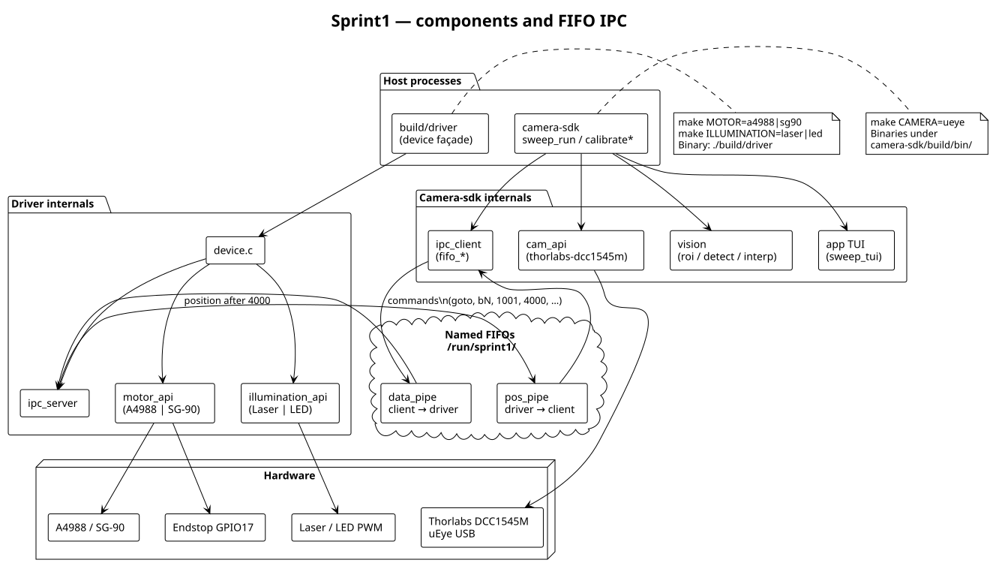
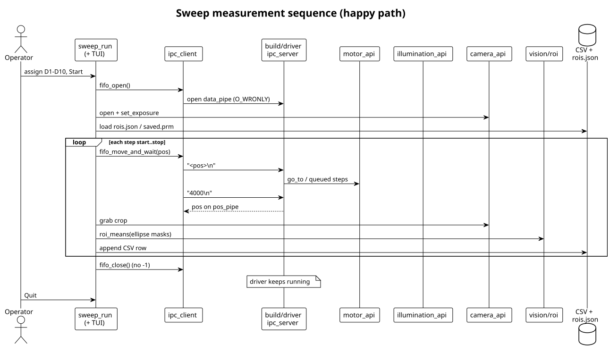
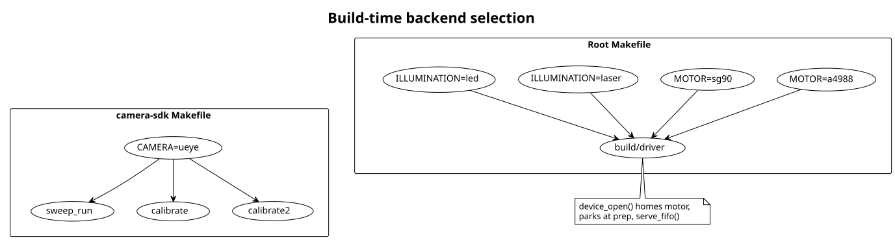

- Generated by
 1.9.8
1.9.8
|
Sprint1
Start servo_calib then sweep_run for measurements; elliptical ROI camera-sdk
|
Sprint1 drives a Raspberry Pi–mounted motor and illumination (“the black box”) while camera-sdk/ captures frames from a Thorlabs DCC1545M (IDS uEye) and records ROI intensities. The device driver and camera tools talk over named FIFOs under /run/sprint1/.
Hardware backends are selected at build time (MOTOR, ILLUMINATION, CAMERA). Default build: A4988 stepper + laser PWM + uEye camera.
doxygen Doxyfile → docs/html/index.htmlROI calibration is already done for the current optics (/var/lib/sprint1/rois.json). Day-to-day:
sweep_run assigns diseases D1–D10 to blob 1 and blob 2, then Start/Reset for the scan. Quitting leaves ./build/driver running (FIFO closed without -1).
Only after moving the lens or remounting optics. Prefer calibrate2 and try several exposures:
Compare tmp/detected_*.png — green ellipses must sit on the three dark discs. See camera-sdk/app/RECALIBRATE.md.
Hardware: Raspberry Pi 4, WiringPi, root (or GPIO) for the driver (PWM on BCM 18). Shared paths: /run/sprint1/, /var/lib/sprint1/, and a writable logs/ cwd.
OpenCV (for calibrate / calibrate2):
IDS uEye + udev (vendored under vendor/debs/ueye/):
WiringPi (from upstream if needed):
| Dependency | Source |
|---|---|
| OpenCV 4 | apt-get install -y libopencv-dev |
| IDS uEye + udev | vendor/debs/ueye/*.deb |
| WiringPi | WiringPi (-lwiringPi) |



Source: docs/architecture.puml. Pushing .puml changes to main re-renders these SVGs via the PlantUML workflow.
| Component | Role |
|---|---|
build/driver | Device façade: home, park, serve FIFO commands |
device.c | Composes motor_api + illumination_api + ipc_server |
A4988/ / SG-90/ | Motor backends (make MOTOR=a4988\|sg90) |
Laser/ / Led/ | Illumination backends (make ILLUMINATION=laser\|led) |
ipc/ | FIFO server (driver) and client (camera tools) |
camera-sdk/app/ | sweep_run, calibrate, calibrate2, TUI |
camera-sdk/vision/ | ROI, detect, interp |
camera-sdk/thorlabs-dcc1545m/ | uEye backend (CAMERA=ueye) |
logging/ | File + console logger, crash/core-dump hooks |
| Path | Direction | Purpose |
|---|---|---|
/run/sprint1/data_pipe | client → driver | newline-terminated commands |
/run/sprint1/pos_pipe | driver → client | position after 4000 |
BCM pins in gpio_pins.h. Enable is active LOW; endstop is active HIGH; illumination uses hardware PWM on GPIO 18.
| Signal | GPIO | Typical wire |
|---|---|---|
| Enable | 20 | Green |
| MS1 / MS2 / MS3 | 13 / 19 / 26 | Blue / Purple / Grey |
| Step / Dir | 27 / 22 | White / Black |
| Illumination / Endstop | 18 / 17 | Blue→White / Grey |
Microstepping (A4988): 1/16. Step half-period: STEP_DELAY_US (20 ms).
ASCII lines on data_pipe. Integer lines are commands; bN sets illumination brightness (0–255).
| Input | Meaning |
|---|---|
0–1000 | Absolute goto step |
1001 / 1002 | Illumination on / off |
1003 | Disable motor |
1004 | Enable motor |
1006 / 1007 | Single step forward / back |
2000 | Reload /var/lib/sprint1/saved.prm |
4000 | Publish position on pos_pipe |
-1 | Exit driver |
Angle: 0.1125°/step. Homing ≈ CMD_POS_ZERO + DELTA (400 + 34).
/var/lib/sprint1/saved.prm** — start stop prep (each 0–999)/var/lib/sprint1/rois.json** — elliptical blobs {name,cx,cy,rx,ry,angle}/var/lib/sprint1/rois_interp.json** — two-point model from calibrate2sprint1_logging_init writes logs/<app>-<epoch>.log + stderr (DEBUG, 100 ms auto-flush). Fatal signals log the expected core path then re-raise.
| Symptom | Fix |
|---|---|
no reader | Start sudo ./build/driver first |
EPIPE | Keep one write fd open for the whole session |
| Bad ellipses | calibrate2 at 0.20 / 0.14 / 0.10 |
| Wrong binary name | Driver is build/driver (not servo_calib) |
Camera tools detail: camera-sdk/README.md.